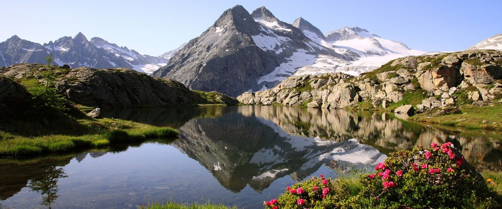
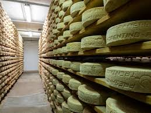
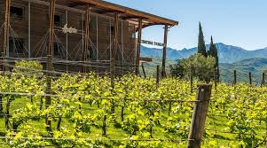
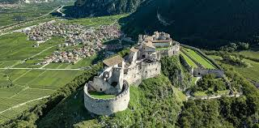
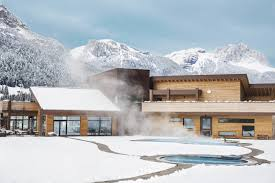

🗻 Pinzolo & Trentino Travel Guide
Pinzolo's charming winter evening landscape with the majestic Dolomites
🗺️ Interactive Guide Map
Explore all locations mentioned in this guide: View Interactive Map →
🏠 Accommodation
Campiglio Panorama del Brenta
📍 Area Overview
Pinzolo is a charming town in the Trentino-Alto Adige region , nestled at the foot of the majestic Dolomites at an elevation of 770 meters. This region represents a fascinating blend of Italian and Austrian influences, visible in its architecture, cuisine, and local traditions.
Quick Facts :
Population: ~3,000 residents
Location: Val Rendena valley
Known for: Cultural heritage, gastronomy, and natural beauty
Best time to visit: Year-round (each season offers unique experiences)
🏰 Historical & Cultural Sites
Church of San Vigilio
Built : 10th century, renovated in 15th centuryFamous for : "Danse Macabre" frescoes by Simone Baschenis (1539)Artistic Significance : One of the Alps' most extraordinary medieval frescoesOpening Hours : 9:00-17:00 (winter hours)Entry : Free (donations appreciated)Guided Tours : Available on requestLocation : View on Maps
The historic Church of San Vigilio with its remarkable frescoes
Monument to the Cutlers
Erected : 1969Artist : Local sculptor Claudio TrotterHistorical Significance : Honors Pinzolo's "moléte" (knife grinders)Cultural Impact : Represents local craftsmen who traveled EuropeLocation : Town entrance, easily accessibleBest Photo Time : Morning lightLocation : View on Maps
🌲 Nature & Parks
Adamello Brenta Nature Park
Why Visit : Largest protected area in Trentino featuring:
Glacial lakes
Alpine meadows
Dense forests
Wildlife: brown bears, ibex, golden eagles
Rare alpine plants
Best Activity : Hiking and wildlife spottingLocation : View on Maps

Winter landscape at Adamello Brenta Nature Park
Nardis Waterfalls
Why Visit : One of Trentino's tallest waterfalls (130m)Features :
Surrounded by lush forests
Alpine scenery
Easy accessibility
Best Activity : Short scenic hike to viewpointsDistance : 15-minute drive from PinzoloLocation : View on Maps
The majestic Nardis Waterfalls
Lake Ritorto
Why Visit : Crystal-clear alpine lake with Dolomites viewsBest Activity :
Lake circuit hiking
Photography
Peaceful nature walks
Access : 1-hour hike from PatascossLocation : View on Maps
Lake Ritorto with the Brenta Dolomites backdrop
Val di Genova
Why Visit : Known as the "Valley of Waterfalls"Features :
Glacial valley
Dense forests
Rare alpine flowers
Wildlife (deer, marmots)
Best Activity : Scenic drive or hiking with viewpoint stopsLocation : Inside Adamello Brenta ParkLocation : View on Maps
The scenic Valley of Waterfalls
Malga Ritorto
Why Visit : Traditional alpine farm experienceFeatures :
Grazing cows
Fresh cheese production
Mountain views
Best Activity : Local dairy tasting and farm lifeAccess : 1-hour hike from Madonna di CampiglioLocation : View on Maps
Traditional alpine farming at Malga Ritorto
🚜 Local Food & Agriculture
Must-Visit Producers
🧀 Caseificio Sociale di Pinzolo
Specialty : Trentingrana DOP & Spressa DOPExperience :
Morning cheese-making demonstrations
Tasting sessions
Shop with local products
Winter Hours : Mon-Sat 8:30-12:30, 15:30-19:00Tours : Book 48h in advanceBook Visit → Location : View on Maps

Traditional cheese making at Caseificio Sociale di Pinzolo
🍷 Cantina Toblino
Known For :
Vino Santo (holy wine)
Nosiola grapes
Mountain wines
Offerings :
Guided cellar tours
Wine tasting sessions
Wine pairing workshops
Winter Schedule : Daily 10:00-18:00Languages : Italian, English, GermanReserve Tasting → Location : View on Maps

Wine tasting experience at Cantina Toblino
🍫 Pasticceria Zaffiro
Specialties :
Artisanal chocolates
Traditional Trentino pastries
Hot chocolate
Activities :
Chocolate making workshops
Tasting sessions
Take-home gift boxes
Location : Historic center of TrentoDetails → Location : View on Maps
Notable Restaurants
In Madonna di Campiglio (15 min drive)
Chalet Fiat
Cuisine : Gourmet AlpineAltitude : 2,104mSpecialties :
Wild game
Mountain herbs
Local wines
Views : 360° Dolomite panoramaReservation : EssentialPrice : €€€€Book Table → Location : View on Maps
🏙️ Day Trips
Trento (1 hour drive)
Morning :
Castello del Buonconsiglio (9:00-17:00)
MUSE Science Museum (10:00-18:00)
Afternoon :
Piazza Duomo
Shopping via Belenzani
Evening :
Wine tasting at Enoteca Provinciale
City Guide → Location : View on Maps

The majestic Castello del Buonconsiglio in Trento
Riva del Garda (1.5 hours drive)
Highlights :
Torre Apponale (climb for lake views)
Bastione di Riva (cable car access)
Winter lakeside walks
Winter Activities :
Indoor thermal spas
Museum visits
Culinary experiences
Lake Activities → Location : View on Maps
💆♂️ Relaxation & Wellness
QC Terme Dolomiti
Facilities :
6 outdoor thermal pools
Finnish saunas
Steam baths
Relaxation rooms
Winter Special : Snow & Spa packageHours : 10:00-22:00 dailyBooking : Reserve 24h aheadBook Experience → Location : View on Maps

Relaxing thermal pools with mountain views at QC Terme Dolomiti
🍷 Wine & Local Agriculture
Must-Visit Producers
🧀 Caseificio Sociale di Pinzolo
Specialty : Trentingrana DOP & Spressa DOPExperience :
Morning cheese-making demonstrations
Tasting sessions
Shop with local products
Winter Hours : Mon-Sat 8:30-12:30, 15:30-19:00Tours : Book 48h in advanceBook Visit → Location : View on Maps
Traditional cheese making at Caseificio Sociale di Pinzolo
🍷 Cantina Toblino
Known For :
Vino Santo (holy wine)
Nosiola grapes
Mountain wines
Offerings :
Guided cellar tours
Wine tasting sessions
Wine pairing workshops
Winter Schedule : Daily 10:00-18:00Languages : Italian, English, GermanReserve Tasting → Location : View on Maps
Wine tasting experience at Cantina Toblino
🍫 Pasticceria Zaffiro
Specialties :
Artisanal chocolates
Traditional Trentino pastries
Hot chocolate
Activities :
Chocolate making workshops
Tasting sessions
Take-home gift boxes
Location : Historic center of TrentoDetails → Location : View on Maps
Wine Experiences
Pisoni Winery
Description : Family-run winery specializing in traditional Trentino winesSpecialties :
Experience : Guided vineyard & cellar tours with tastingsDistance : 45 minutes from PinzoloLocation : View on Maps
Endrizzi Winery
Established : 1885Highlights :
Sustainable vineyards
Modern cellars
Diverse wine selection
Experience : Tours and tastings availableDistance : 1 hour from PinzoloLocation : View on Maps
Traditional wine tasting in a local cantina
🧀 Cheese Experiences
Agritur Maso Pan
Experience :
Live cheese-making demonstrations
Farm animal interactions
Fresh dairy tastings
Distance : 10 minutes from PinzoloLocation : View on Maps
Caseificio Sociale Presanella
Type : Traditional dairy cooperativeOfferings :
Guided production tours
Cheese tastings
Local product shop
Distance : 45 minutes from PinzoloLocation : View on Maps
Traditional cheese making process demonstration
🚜 Local Agricultural Experiences
Agriturismo Dalla Natura la Salute
Specialty : Organic medicinal herbsActivities :
Garden tours
Educational workshops
Natural product shop
Distance : 1 hour from PinzoloLocation : View on Maps
Mieli Thun Beekeeping Farm
Focus : Nomadic beekeepingExperience :
Hive visits
Honey production insights
Mono-floral honey tastings
Distance : 1 hour 15 minutes from PinzoloLocation : View on Maps
Agraria Riva del Garda
Products :
High-quality olive oil
Local wines
Activities :
Olive mill tours
Winery visits
Product tastings
Distance : 1 hour from PinzoloLocation : View on Maps
Traditional agricultural practices in Trentino
Emergency : 112Mountain Rescue : 118Tourist Office : +39 0465 501007
Transport
Weather Resources
 Pinzolo's charming winter evening landscape with the majestic Dolomites
Pinzolo's charming winter evening landscape with the majestic Dolomites
 The historic Church of San Vigilio with its remarkable frescoes
The historic Church of San Vigilio with its remarkable frescoes
 The majestic Nardis Waterfalls
The majestic Nardis Waterfalls
 Lake Ritorto with the Brenta Dolomites backdrop
Lake Ritorto with the Brenta Dolomites backdrop
 The scenic Valley of Waterfalls
The scenic Valley of Waterfalls
 Traditional alpine farming at Malga Ritorto
Traditional alpine farming at Malga Ritorto
 Traditional wine tasting in a local cantina
Traditional wine tasting in a local cantina
 Traditional cheese making process demonstration
Traditional cheese making process demonstration
 Traditional agricultural practices in Trentino
Traditional agricultural practices in Trentino